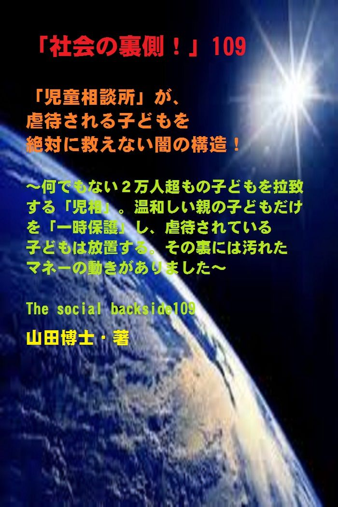

| 「社会の裏側！」109......「児童相談所」が、虐待される子どもを絶対に救えない闇の構造！: 何でもない２万人超もの子どもを拉致する「児相」。温和しい親の子どもだけを「一時保護」し、虐待されている子どもは放置する。その裏には汚れたマネーの動きがありました | |
| 山田博士 | |
| kominitesyuppankai (2019) | |

■ 「社会の裏側！ 」 109
「児童相談所」が、虐待される子どもを絶対に救えない闇の構造！
～何でもない２万人超もの子どもを拉致する「児相」。温和しい親の子どもだけを「一時保護」し、虐待されている子どもは放置する。その裏には汚れたマネーの動きがありました～
The social backside109
山田博士・著
★ 本書の著作権について
皆さんにはまったく関係ないことだと思いますが、複写、転送、抜粋、転載など、著作権侵害にあたる行為は絶対になさらないで下さい。本書の著作権は、山田博士にあります。今後、皆さんのお役に立ちたい活動が出来なくなりますので、その点、ぜひよろしくお願いします。ささささ、それでは、本書をどうぞ、ごゆっくりご覧下さい。
★ 概要
ぼくはいま、怒りに震えております（おっととと、中風で震えているのではありませぬ！）。
皆さんきっとご存じのように、千葉県野田市で、親による凄（すさ）まじい少女への虐待（ぎゃくたい）事件が起こりました（２０１９年２月）。
ご存じですよね。
ただ、注意してほしいことがあります。
それは、この事件で皆さんが思っていることは、じつはまったく逆だったのだということ。
いやもちろん、あの虐待事件で、野田市立小４年の栗原心愛（みあ）さん（１０歳）が自宅で殺されたこと。
そして、「傷害容疑」で両親が逮捕された事実には変わりありません。
ぼくは、そのような行為、とくに父親の行為に対しては、激しく責めたいと思っています。
それは事実ですが、ただ問題なのは、多くのかたは、こう思っていらっしゃるはず。
★★★
「いったい、児童相談所（「児相、じそう」）は何をしているわけ。これだけも凄まじい虐待が行われているのに、なぜ父親の元へその女の子を戻したの。もっと児相の権限を強めればいいのじゃないの」
「それに、人手は足りているの？ 予算がひょっとして少ないのじゃないの。もっと私たちは児相を応援しなくてはならないのじゃないの」
そう思ったかたが多いのじゃありませんか。
違いますか。
まあ、このように思われるのは当然です。
ぼくだって、この「児相」の内容を知る前は、ずっとそのように考えていましたから。
そして、この父親が悪なら、その反対に「児相」は善だと思っていたわけですね。
誰しも、悪の反対は 善 ... ... だと思ってしまいますから。
あなたも、そうじゃありませんか。
マスコミたちも、みな、報道は同じ論調でした。
ところがドッコイ、この「児相」の内容が１００％間違ってい た ... ... 。
★★★
「両方とも悪だった 」 ... ... ということが、世の中にはよくあるものですが、この場合も、そうだったのです。
今回の場合は、この父親と「児相」。
父親の行為は、もう言わずもがな。
ところが、一方のこの「児相」が、闇（やみ）にどっぷりと浸（つ）かっていたわけなんですね。
そして、戦後のこの数十年、誰も気が付かず、ずっとそのままだったのです。
役人たちのしたいがままに放置され、ぼくたちの貴重な税金が湯水のように流れていたわけです。
そして、マスコミも、なぜか報道もせず、今日まで来てしまいました。
どういうことかと言います と ... ... 。
まったく虐待も何もされていない子どもが、この「児相」に拉致（らち）される。
そして、本当に「一時保護」しなくてはならない子どもが、その親の凶暴さのため、再び家に戻される。
その結果、冒頭で挙げたような「悲惨な野田事件」となったわけですね。
★★★
このような現実が、日常茶飯（にちじょうさはん）に起こっていたわけです。
現在、虐待だけじゃなく、貧困や疾患や子ども自身の非行などが理由で、「一時保護」される子どもたちは、「児相」に併設されている「一時保護所」に保護されております。
その数は、２０１４年に、延べ２万２千人にものぼっていると。
こうした「一時保護」は、事実上の行政による「神かくし」とも呼ばれるものなんですね。
なぜなら、こうした「一時保護」される子どもたちの多くは、学校の友人や先生、それに近所の知り合いや親戚の人などに「お別れを告げる」こともできないまま、「児相」内の「一時保護所」に行くことになるからです。
こんな悲しいことって、ありますか。
★★★
どうしてこんなことが白昼、堂々と行われているのか。
その陰には「汚れたおカネ」の存在がありました。
本当に助けを求めている子どもたちを救うため、こうした現実をぜひあなたにも知ってほしいがために、この原稿をまとめた次第です。
子どもが大好きなぼくは、優しい心を持つあなたにも、この事実を「本当に」知ってほしい。
どうぞ、ご覧下さい。
お楽しみに！
★ 目次
★ （第１章）
野田市（千葉県）での女児虐待事件で、世間では、「児相」の人手不足が原因じゃないのとか、予算不足じゃないのとかいう声がたくさん出ていました。ところが、トンデモナイ。じつはまったくの逆だったんですね。「児相」の闇と は ......
★ （第２章）
「児相」の大罪。たとえ虐待がなかろうと、温和しい親の子どもを平気で「拉致」します。そして、刑務所でさえ面会があるのに、直接親子を会わせず「数年間」も隔離して精神薬漬けにする。こんな凶暴な組織があることを知ってほし い ......
★ （第３章）
そして、この「児相」は、子どもが親から虐待されているかどうかは、彼らの「主観で決定する」のだと言います。だから、校長が親が憎ければ、子どもが虐待されていると通報すれば、「一時保護」となります。そしてそのまま神隠し へ ......
★ （第４章）
そう「児相」で「一時保護」する子どもは、たとえば母子家庭の母とか、風俗で働く母とか、そのように、いかにも弱者の親の子ばかりなんです。凶暴な親の子どもは「一時保護」しません。これで虐待児は、はたして減少します か ......
★ 「社会の裏側！」シリーズの既刊本案内
★ プロフィール
（最初に、恥ずかしながら、ぼくの紹介を簡単に述べておきます）
やまだ・ひろし。
１９４７年、福井県小浜（おばま）市生まれ。
食生態学者。元大学名誉教授。日本危機管理学会会員。
山田博士いのち研究所主宰。
ベトナム戦争の終わったちょうどその年１９７５年に、マンガストーリィと商品の実名で食べものや環境を取り上げた小冊子「暮しの赤信号」を発行する。実名で取り上げたため、社会に衝撃を与えた。各号１０万部単位で読まれ、隠れたベストセラーなどと、新聞などで何度も報道される。
同じ年、偶然にも有吉佐和子さんの「複合汚染」が発表され、この小冊子はその動きも受けて多くの学校の副読本としても活用された。
文化放送の「なっちゃこワイド」や、ＮＨＫ海外放送「ある日本人」でお話しをしたり、ギター弾き語り公演や、各自治体や学校などへの講演なども続けている。
現在は、メルマガ「暮しの赤信号」（「短縮版」と「完全版」の２種）を発行し、企業名や商品名なども公表して、世界中のかたに喜ばれている。
その読者層は、医師や看護師、栄養士、教師、会社経営者、自治体など、国の内外を問わず、多くの読者たちから毎日のように便りが届いている。年齢層も、１０代からかなりの高齢のかたまで、さまざまだ。
このメルマガは、まぐまぐ！を始め３つのスタンドの合計で、７千部発行しているが、もしご関心のあるかたは、ご覧いただくと嬉しい。毎日、早朝５時に届けられる（日曜は除く）。その時刻を楽しみにされている読者も多いとか。
先述したように、メルマガ「暮しの赤信号」には２種類あり、「短縮版」のほうは無料。「完全版」のほうは、山田の思いが１００％掲載されており、社会を見るのに、毎回大いに参考になるだろう。そのほかにもさまざまな特典がある。
「短縮版」については、ご希望のかたには、お送りしてもいい。
■ 毎月第３土曜日に、東京の恵比寿でお茶飲み会「博々亭（ひろびろてい）」を開催。遠路から毎回読者が駆けつけている。参加条件はメルマガ読者に限定。参加費用は無料だ（８月と１２月はお休み）。
■ 著書には、下記のようなものがある。
『脱コンビニ食！』（平凡社新書）
『危険な食品』（宝島社新書）
『その食品はホンモノですか？』（三才ブックス）
『ひとり月１万円食費で幸せ生活』（ＷＡＶＥ出版）
『最新 危ないコンビニ食』（現代書館）
『あぶないコンビニ食』（三一新書）
『続 あぶないコンビニ食』（同）
『外食店健康度ランキング』（同）
『山田博士の暮しの赤信号』第１巻～第５巻（亜紀書房）
『暮しの赤信号』小冊子＆ＣＤ－ＲＯＭ版全２３巻
『月１万少々の食費で、ザクザクと健康を稼ぐぼくの方法』
『いのち運 転" 即実 践" マニュアル』各話
『社会の裏側！』各巻（アマゾン発行の電子書籍）
『セーラー服と警察犬』（小説）各巻
『実話・食卓の事件簿』各 巻 ... ... など。
■ 山田のホームペー ジ → http://yamadainochi.com/
■ 短縮版メルマガ「暮しの赤信号」専用ブログ
→ https://inochimamorutameni.hateblo.jp/
■ 短縮版メルマガ「暮しの赤信号」登録（無料）
→ http://goo.gl/AFx95J
★ はじめ に ......
こんにちは。
山田博士（やまだ・ひろし）です。
本書をご覧いただき、嬉しく思っております。
この内容をご覧いただくことで、少しでもあなたが「社会の裏側！」の流れにお気づきになり、そしてたとえ１ミリでもいい、即、行動されることを願っております。
ただ読むだけでは、誰でもできます。
それでは、あなたの身の回りの状況は石のように動きません。
本書をご覧になって、これ は ... ... と思うことがあれば、即行動なさって下さい。
お願いします。
その小さな行動の積み重ねこそが、あなたの明日を、１２色のバラ色で輝かせることになると信じております。
なお、この「社会の裏側！」は、今後もシリーズとして発刊して行くつもりです。
もしご関心があれば、「社会の裏側！」という名前で、アマゾンで検索してお調べ下さい。
さまざまな問題の社会の裏側！を詳しく、しかも楽しく述べております。
ぼくの名前で検索されても、見つかるのではないかと思います。
もし、「ＰＤＦ版」でご希望の場合は、ぼくの事務局まで遠慮なくお問い合わせ下さい。事務 局→ http://goo.gl/t12Yx
ささささ、能書きはそこまでにします。
どうぞ、笑顔で、頁をお繰（く）り下さい。
お楽しみに！
★ （第１章）
野田市（千葉県）での女児虐待事件で、世間では、「児相」の人手不足が原因じゃないのとか、予算不足じゃないのとかいう声がたくさん出ていました。ところが、トンデモナイ。じつはまったくの逆だったんですね。「児相」の闇と は ......
子どもは天使です。
ぼくも、本当なら、彼らのうしろを、スキップしながらいっしょに飛び跳（は）ねた い ...... (笑) 。
もしぼくが彼らの真似をしながら道を歩けば、そばにいる人が「おかしな人が子どもの後ろから踊りながら歩いています。すぐ来て下さい！ 」 ... ... なんて通報をして、どこからか、サイレンの音が近づいてくることでしょう。
子どもは自由です。
不思議な存在です。
大人は彼らを、何があっても、「絶対に」守る義務があります。
どうして彼らは、あのように、指の動かしかた、声の出しかた、柔らかい身のこなしかた、そして走りかたなどの仕草 が ... ... 可愛いのでしょう。
ねえ、誰か教えて下さい。
どう考えても、不肖（ふしょう）ぼくには分かりません。
それほど、大人には、彼らの仕草は難しい。
そして、あのような「偉大な動作」は不可能で す ... ... 。
ぼくは、彼らの、「限界のない能力」に、いつも敬意を表しています。
そして、そのような彼らの顔を見て、なぜか安心するのです。
彼らの弾（はじ）けるような存在を見るたびに、明日の糧（かて）をいただいているわけですね。
そのためには、いつだって、彼らの笑顔が街に飛び跳ねていなくてはなりません。
笑い声もなく、飛び跳ねる音もないような「沈黙の街」など、誰が望みましょうか。
だから、ぼくたち大人の責任は象より重いのだろうなと痛感しております。
... ... ところが、そういう中で、皆さんご存じのように、先日、千葉県野田市で、親による凄（すさ）まじい少女への虐待（ぎゃくたい）事件が起こりました（２０１９年２月）。
ご存じですよね。
ただ、注意してほしいことがあります。
それは、この事件で皆さんが思っていることは、じつはまったく逆だったのだということ。
いやもちろん、あの虐待事件で、野田市立小４年の栗原心愛（みあ）さん（１０歳）が自宅で殺されたこと。
そして、「傷害容疑」で両親が逮捕された事実には変わりありません。
ぼくは、そのような行為、とくに父親の行為に対しては、激しく責めたいと思っています。
それは事実ですが、ただ問題なのは、多くのかたは、こう思っていらっしゃるはず。
「いったい、児童相談所（「児相、じそう」）は何をしているわけ。これだけも凄まじい虐待が行われているのに、なぜ父親の元へその女の子を戻したの。もっと児相の権限を強めればいいじゃないの。それに、人手は足りているの？ 予算がひょっとして少ないのじゃないの」
そう思ったかたが多いのじゃありませんか。
まあ、このように思われるのは当然です。
ぼくだって、以前は、そのように思っていましたから。
そして、この父親が悪なら、その反対に「児相」は善だと思っていたわけですね。
悪の反対は善だと思ってしまいますから。
あなたも、そうじゃありませんか。
マスコミたちも、みな、報道は同じ論調でした。
ところがドッコイ、この「児相」の内容が１００％間違ってい た ... ... 。
いわば、闇（やみ）と言われるものの中に、この「児相」がどっぷりと浸（つ）かっていたわけです。
そして、戦後のこの数十年、ずっとそのままでした。
虐待も何もしていない子どもが、この「児相」に拉致（らち）される。
そして、本当に「一時保護」しなくてはならない子どもが、その親の凶暴さのため、再び家に戻される。
そのような現実が、日常茶飯（さはん）に起こっていたわけですね。
そのため、ある母子の中には、この「児相」に拉致（らち）されるのを逃（のが）れるため、なんと、わざわざオランダまで逃避してしまった人もいたほど。
いったい、これはどうしたことなのでしょう。
なぜ、こうした現実があるのか。
そして、その解決策はあるのか。
現在、虐待だけじゃなく、貧困や疾患や子ども自身の非行などが理由で、「一時保護」される子どもたちは、「児相」に併設されている「一時保護所」に保護をされております。
その数は、２０１４年に、延べ２万２千人にものぼっていると。
こうした「一時保護」は、事実上の行政による「神かくし」とも呼ばれるものなんですね。
なぜなら、こうした「一時保護」される子どもたちの多くは、学校の友人や先生、それに近所の知り合いや親戚の人などに「お別れを告げる」こともできないまま、「児相」内の「一時保護所」に行くことになるからです。
こんな悲しいことって、ありますか。
これじゃまるで、ヒトラーの時代の、ユダヤ人狩りのようじゃありませんか。
違いますか。
挨拶もなしに「一時保護所」へ。
どうぞ、下記をご覧下さい。
★ （第２章）
「児相」の大罪。たとえ虐待がなかろうと、温和しい親の子どもを平気で「拉致」します。そして、刑務所でさえ面会があるのに、直接親子を会わせず「数年間」も隔離して精神薬漬けにする。こんな凶暴な組織があることを知ってほし い ......
最初に結論を述べておきます。
現在の、いわゆる「児童相談所」は、けっして子どもを守る存在ではないこと。
そして逆に、何でもない子どもたちを「令状なしで親から強制的に引き離して拉致（らち）」できる組織 だ ... ... という事実。
しかも、その拉致された子どもたちが、精神薬のクスリ漬けになり、結果として「廃人同様」になってしまってい る ... ... という事実。
何をさておいても、それらについてだけは、どうしても先に頭に入れておいて下さい。
ぼくたちは、戦後ずっと、この「児相」という組織がまったくの 「 ● ● の味方」だと信じ切っていました （ ● ● は、下記の設問をご覧下さい）。
そうですよね。
まさか、子どもという名称を持つ組織が、悪いことをするはずがない。
いつも庶民の味方に決まっているし、親たちの味方に違いない。
勝手に、そう思っていたのです。
そのため、マスコミたちの報道をそのまま信用し、ぼくたちは「児相」の味方になって、戦後からずっと今日まで来たわけですね。
もちろん、中には、先述した野田市の事件のように、実際に子どもに虐待を働く親がいるのは事実です。
どの時代、どの社会でも、そのような親は少なからず存在するのは間違いありませんし、今回のこの残虐な事件は、本当に悲しい現実です。
ぼくなど、１０歳のその女の子が「許して！」なんて泣き叫ぶ光景を思うだけで、もうやるせなくなってしまいます。
いったい、一人の人間をどう思っているのかと。
ぼくたちの世界では、宇宙から一人の子どもを、親が、「ただ預かっている」に過ぎないわけですね。
自分の子どもだから、「自分の思うようにすればいい 」 ... ... なんていう思い上がりは止めてほしい。
子どもにも人権があり、幸せに生きて行く権利があるのです。
たまたま子どもを生んだ親が、その子どもを不幸せにする権利など、どこにもありません。
社会で生んだ子どもは、「社会の宝」なんですね。
先ほども述べましたが、「あのように、指の動かしかた、声の出しかた、柔らかい身のこなしかた、そして走りかたなどの仕草」が可愛いのは、いったいなぜなのか。
それは、多くの人や、ほかの生きものたちから愛情を受けるためなんですね。
彼らは生まれたときから、本能的に「世界を幸せにする天使」なんです。
その子どもを、「許して！」と泣き叫ばせながら虐待して殺してしまう。
今回も、そのような親が、実際問題として存在していたことは事実です。
本当に悲しい事実です。
でも、だからと言って、親とは反対の「児相」そのものが正義だったん だ ... ... ということは、まったく別の話なんですね。
あとでも述べますが、むしろ、そのような凶暴な親は、意図的に放置されています。
そう、放置されているんですね。
そして、どうにでもなる温和しい親の子どもだけ、「児相」は拉致していました。
これでは、野田市のような虐待事件が起こるのも必至じゃありませんか。
凶暴な親の子どもだからこそ、「一時保護」しなければならない。
そうですよね。
でも、それをしなかった。
それらの原因は、皆さんが漠然と思っていらっしゃるのとは「反対の意味」で、「児相」にありました。
そう反対の意味 で ... ... です。
「児相」に人手がないわけでもなく、予算が不足しているわけでもないのに、この女の子を守れなかったわけです。
なぜなら、そのような凶暴でうるさい親の子どもを「一時保護」しても、「児相」にとってメリットは何も無いからなんですね。
「児相」にとっては、なるべく問題を起こさないような子どもの「一時保護」をたくさんしたいわけ。
そのほうがあとで述べますように「儲かります」から。
そして、意図的に凶暴な親は放置し、温和しい親の子どもばかりを保護することの方向へと、「児相」は進んできたわけです。
まあ、このことも、あとで述べたいと思います。
そのあたりを、どうか間違わないでほしい。
そして、当然ですが、親のそうした虐待をけっして認めるわけではないんだということ。
それはぜひ確認して下さい。
まあ、そんなこと、当然ですけどね。
さて、ところで、利権にまみれた、この「児相」とはいったい何者なのか。
ちょっと見てみて下さい。
この「児童相談所」（「児相（じそう）」は、児童福祉法第１２条に基（もと）づいて、各都道府県に設けられた児童福祉の専門機関なんですね。
すべての都道府県、および政令指定都市、それに２００６年４月からは、中核市にも設置できるようになりました。
そこには、最低一つ以上の「児相」が設置されています。
都道府県によっては、その規模や地理的状況に応じて、複数の「児相」やその支所なども設置しています。
じつは、この「児相」は、もともと、先の大戦後、孤児（みなしご。親のいない子）を保護する形で作られたものなんですね。
でも、経済が復興し、日本が先進国の仲間入りするにあたって、こうした孤児を対象とした政策を変更しなければならなくなった。
予算があるので、それを何かに使わなければならないわけです。
そこで、親の虐待防止などを前面に打ち出した組織となってきたわけですね。
つまり、子どもを守ろうとか、子どもを助けよ う ... ... というのじゃなく、最初からお金ありき、なんですね。
その予算をどうすれば、使えばいいのか。
そして、どうすれば、公務員たちが自分の給料をもらえるのか。
そういうことばかり考えている組織が、この「児相」というわけなんです。
これじゃ、各地で起こっている本当の虐待など、減少するはずもありません。
ところで、もしいま子どもさんの問題が起こった ら ... ... 。
★ （第３章）
そして、この「児相」は、子どもが親から虐待されているかどうかは、彼らの「主観で決定する」のだと言います。だから、校長が親が憎ければ、子どもが虐待されていると通報すれば、「一時保護」となります。そしてそのまま神隠し へ ......
ところで、いま、もし皆さんのご家庭、あるいは親戚の子どもさんの問題が起こっても、絶対に、近くの「児相」へは行かないで下さい。
本当に残念なお話しなのですが、行かないで下さい。
ぼくたちが汗水流して納めた税金を使って、この「児相」はいったい何をしているの か ... ... なんて言いたくもなります。
でも、もしあなたがこの「児相」に相談に行きますと、大変な結果が待っています。
「児相」は、それ、カモが来 た ... ... というわけですね。
そして、相談に来た、その温和しい親のデータをすべて網羅（もうら）して、その後の「一時保護」へとつなげます。その延長線上に、相談者が乗ったことになるわけですね。
これ、別に大げさなことを言っているのではなく、いくつかの例を見るまでもなく事実です。
いまここで述べていることは、内科医・漢方医である内海聡（うつみさとる）さんが、動画で述べておられたものによります。
ぼくがいつもお話ししていることときわめて似通っていますので、かなり共感が持てました。
彼によりますと、この「児相」は一般人にとっては、とても理解できない組織 だ ... ... とのこと。
確かに、いままで述べてきたことからも、皆さんは、そう思っていらっしゃるのではないですか。
子ど も ... ... という名称が付いていながら、まるで子どもを大事にしていない。
そのような組織が、この２１世紀の日本に存在するのだという驚き。
こういうことについて、ぜひ素直に驚いて下さい。
そして、この「児相」は、子どもが親から虐待されているかどうかは、彼らの「主観で決定する」のだと言います。
つまり、内海さんによりますと、こういう例があります。
たとえば、被害 児A 君（当 時6 歳）の通う小学校の校長が、あると きA 君の父親から、大勢の教職員の前で教育論について論破されたというんですね。
その場では、校長は自分の体験不足もあって、何も言えなくなったわけ。
そうした屈辱（くつじょく）を味わわされた校長は、何をしたか。
その腹いせに 、A 君の体についてい た6 か所のアザを、「両親による児童虐待の証拠だ」として、「児相」に通報をしたと言います。
そして虐待現場など見ているはずもない担任に、「虐待現場を目撃し た ... ... 」としてウソの証言もさせたわけですね。
この通報を受けた「児相」はどうしたのか。
「児相」は、両親に一切の事実確認をしないまま 、A 君を「一時保護」してしまったわけ。
いやあ、驚きましたね！
この「一時保護 」 ... ... とは、名ばかりです。
普通は２か月と決められていますが、その延長は彼らの思うがまま。
つまり、「無制限もあり」なんですね。
A 君の体にはアザ が6 か所ほどあったのですが、確かにお尻 の1 か所は両親の行なった体罰のアザでした。
でも、その両親は体罰を行なう際は非常に理性的で、体に支障をきたすようなケガをさせないよう注意をしていたわけですね。
その他 の5 か所のアザは、学校でのいじめや学校職員から受けた体罰。
あるいは 、A 君自身がケガをして、自分でつけたものだったんです。
しかし、その「児相」は、一切の事実確認をしない。
そして、そのすべてのアザを両親が虐待によって付けたものだと決めつけてしまったわけです。
そのため、「児相」は医者にも、 「A 君には靴で蹴られたアザがついている」という虚偽（きょぎ）の診断書を書かせたわけですね。
そして「命の危険がある」として、強引に一時保護に踏み切りました。
そのあとも「児相」は 、A 君に対する虐待の有無に関して事実調査をまったく行なっていません。
いったい、これはどういうことなのでしょうか。
もし、一時保護をしたのであれば、そのあとに、虐待の事実調査を念入りにすべきですよね、普通 は ... ... 。
そして、少しでも元通りになれるよう奮闘するはずです。
でも、それをしない。
こうして「拉致（らち）された 」A 君は、泣いて家に帰りたいと、叫んでいたと言います。
まあ、これらは、両親の起こした裁判の過程で明らかになったことなのですが、「児相」は、こうし たA 君の「帰りたい」という意志を無視して、拉致し続けているわけですね。
いったい、何のために？
そして両親に対しては、 「A 君は両親を怖れて家に帰りたがっていないので返せない」と、主張しているわけなんです。
そうこうしているうちに、すでに現在に至るまで 、A 君はもう５年以上も両親に会っていないんですね。
５年です！
もちろん、面会も手紙のやり取りも一切が禁止。
刑務所でさえ、面会などはできるのに、それもできない。
しかも、こ のA 君の両親の元には 、4 歳 と5 歳の幼い弟妹がいるんですね。
もし、この両親が子どもを虐待しているのなら、こ の2 人の子どもに対しても、なぜ「児相」は案じることがないのでしょう。
いかにも、不思議ですよね。
こうした子どもの拉致は、令状も何も不要です。
そして厚労省も役所も誰も、この責任を取らないわけですね。「児相」というのは、本当に不可解で不思議な組織だということがよく分かります。
このように、親が子どもを虐待していると「児相」が主観で思えば、子どもを拉致できます。
何でもできます。
学校帰りの児童公園で子どもを待ち伏せし、クルマに無理矢理乗せて拉致するわけですね。
これ、北朝鮮の話ではありません。
２１世紀の、れっきとした「先進国」ニッポンでのお話。
しかも、いま述べたようなちょっとしたアザだけじゃなく、この「児相」が主観で虐待だと疑うような方法は、ほかにもまだまだあります。
たとえば、いつもぼくが叫んでいるものなど、ほとんどがこ れ(笑) 。
たとえば、ワクチンは不要だとか、歯にフッ素を塗るのは逆効果だとか、牛乳を飲むのは良くないのだとか。
そういう方法で子どもを育てますと、それは「虐待になる」ようです よ(笑) 。
もう、呆（あき）れるしかありません。
ある若い母親が、母乳で子どもを育てていたのですが、子どもの調子を診（み）てもらうために小児科医へ行ったそうです。
すると、その小児科医は、母乳じゃなくて人工乳を与えなさ い ... ... と言うわけですね。
その母親は、母乳にした い ... ... と言ったらしいのですが、するとそのまま、その小児科医によって「児相」へ通報されたと。
なぜなら、母乳などでは「栄養にもならない」から、そんなものを与えているのは子どもへの虐待にほかならな い ... ... というわけですね。
そして一時保護 へ ... ... 。
いったい、いま、この日本で何が起こっているのでしょう。
戦後、ぼくたちがひとつずつ培（つちか）ってきたこの社会に、いま大きな変化が起ころうとしているのじゃないのか。
ぼくは非常に危惧しています。
いったい、なぜ「児相」はこうまでして、表向き「虐待されている子ども」を、社会にいっぱい作りたいのか。
そう、「作りたい」のか。
それ は ... ... 。
★ （第４章）
そう「児相」で「一時保護」する子どもは、たとえば母子家庭の母とか、風俗で働く母とか、そのように、いかにも弱者の親の子ばかりなんです。凶暴な親の子どもは「一時保護」しません。これで虐待児は、はたして減少します か ......
なぜ、「児相」がこのように、どんどんと「虐待されている子ども」を作りたいの か ... ... と言いますと、彼らの利益のためなんですね。
つまり、子ども一人を「児相」で預かれば、一人あたり３０万円～３５万円が自治体から支払われるわけです。
これほど、いい「商売」はありません。
だから何が何でも、「問題児」を集めなくてはならない。
もしそうして予算が消化できなければ、翌年は予算が少なくなりますからね。
だから、年度末の３月になると、グンと「虐待児」が増えるわけで す(笑) 。
滑稽でしょう。
そうじゃありませんか。
いったい、この「児相」の役人たちは、何のために、公務員として働いているわけです？
国民の血と汗で巻き上げた税金を、湯水のように使うためだけに、毎日、その「児相」に詰めている（あえて働いている、とは言いません）。
そんな「児相」が、いま必要ですか。
そして、「児相」たちは、一番必要で凶暴な親に対しては、何もしないわけです。
そう、見るからに、いかにも子どもたちを虐待していそうな親の子どもは、絶対に保護しません。
なぜ？
そりゃそうでしょう。
自分が痛い目にあうのはイヤだか ら(笑) 。
凶暴な親が「児相」に乗り込んできて、朝から夜まで叫んだり、ときには暴力をふるわれてもしてご覧なさい。
一度そういうことがあれば、二度と、そのような凶暴な親から避けるようになるのじゃありませんか。
そんな苦労しなくても、ちゃんと「給料は出る」わけですからね。
だから、そんな親の子どもを、「一時保護」などできますか。
もし保護でもすれば、必ずその子どもを取り返しに乗り込んできますから、そこで大事件が起こるのは必至です。
だから、どうするか。
ご想像のとおり。
いかにも温和（おとな）しい親の子どもだけを対象にするわけですね。
そのような子どもばかり「一時保護」をして拉致して来る。
そう「児相」で「一時保護」する子どもは、たとえば母子家庭の母とか、風俗で働く母とか、そのように、いかにも弱者の親の子ばかりなんです。
ちょっと考えてみて下さい。
これで、社会の虐待児は、減少しますか。
よくニュースで報道される親による虐待事件。
先述した野田市での事件のときもそうでした。
そのときに記者会見する「児相」の担当者の言葉を、よく聞いてご覧なさい。
「いやあ、そこまで凶暴とは思えませんでしたので、親のところへ戻したんです。いまから思えば、もう少し注意をすればよかったのです が ... ... 」
何を言っているんです？
親が凶暴な子どもは、「一時保護」してもすぐに戻し、どうでもいい子どもばかりをたくさん「保護」しているのが現実なのじゃありませんか。
そして、こうした「一時保護」をした子どもたちは、先述しましたように、その期間は当初２か月と決まっております。
でも、実際には、そのあと延長を繰り返し、無制限なんですね。
だれもそれを取り締まることもできないし、規制する法律もない。
「児相」のやりたい放 題 ... ... というわけです。
また、子どもたちはこうした「一時保護」されるだけじゃないんですね。
こうした子どもたちには、精神薬が投与されます。
コカインと同様の成分ですから、すぐに廃 人 ... ... となります。
子どもが家に戻りたいと泣くと、「はいクスリ」。
ぼくは、こうした「児相」という組織は、日本人を壊すために存在しているものだろうと思っています。
これは、ほかの分野もそうですが、日本という国を少子化にさせ、文化を壊し、工業やＩＴ分野を弱体化させて消滅させるための大きな流れの中の一つだろうなと、思うんですね。
いまは詳しく述べませんが、隣国たちの思惑なんです。
日本をなんとか弱体化したい。
そして、そのための工作を、この日本国内のさまざまなところに張り巡らしているんですね。
これには、リアルの方法と、ネットなどのバージャルの方法の２方面があり、なんとも巧妙に進んでいます。
今回のこの「児相」問題についても、その流れにあるんだと、ぜひ気づいてほしい。
そうでなければ、今回のこの「児相」問題は、根本的に解決しません。
今後も同じような事件が続出して、子どもたちの頬に涙がこぼれ落ち続けます。
それだけは、絶対に避けたい。
ぼくはそう思っております。
いつもメルマガなどで述べていますが、ぼくたちの国の先祖サンたちは、素晴らしい素質、そして勇気を持っていて、ぼくたちに素敵な文化や文明を遺（のこ）してくれました。
だからこそ、こうした小さな東洋の海に浮かぶ小さな国なのに、世界に二つとない日本文明が花開いて、大きな実を育ててくれたわけなんですね。
だから日本だけは、植民地にもならず（タイもそうでしたが）、このアジアという地域で横暴で残虐な白人たちと闘ったわけです。
そのために培（つちか）ってきた技術や文化、言葉、文字などは、とても外国の比じゃなかった。
もし、それらが無かったら、日本も欧米諸国の餌食（えじき）となり、いまごろは植民地となって小国で甘んじていたことでしょう。
そして、それは同時に、ほかの多くのアジア諸国も同じだったはずです。
きっと現在も、まだ、欧米諸国の植民地であったに違いありません。
なぜ、日本だけが欧米列強と闘えたのか。
いま、中国や韓国たちがどれだけ「反日の動き」を持って騒いでいようとも、とても彼らには真似ができない高度な独自文化を、日本は持っていたんです。
でもいま。
このような素晴らしい日本を「壊そう」とする。
そして、未来の日本人（子どもたち）を悲しませようとするこうした動きに、ぼくは両手を広げて立ち向かいたいなと思っております。
ぜひ、皆さんも、ごいっしょに、立ち上がって下さい。
お願いします。
そのためにも、ぼくは日本の役所をすべて一度「解体」したい。
役所もＮＨＫなる放送局も、すべて解体して、本当に日本の未来を思っているかたたちだけに委託する。
そうして、今回のこの「児相」のように、とくに子どもたちを大切に守る組織を、みんなで応援するような社会にして行きたい。
とくに、人一倍、子ども好きのぼくは、そんなことをいつも思いながら、道を歩いております。
さて、だんだん長くなってしまいました。
このあたりで終えることにします。
さてっと、それじゃ、どこかの子どもにちょっかい を ... ... 。
お、向こうから歩いて来る男の子が、どうも、ぼくと同じことを考えているようだぞ。
しかしなあ。
右手に縄跳（なわと）びのヒモを持って、グルグル回している。
あっぶないなあ。
こらあ。
お前をゴツンと虐待するぞ お ... ... 。
おっととと、こんなことを大声で言ったらいけませんよね。
ハハ ハ ... ... 。それじゃまた次回ね。ご機嫌よう。（山田博士）
▼ 設問で す ▼
設 問→ 上記の文章を読み、下記 の ● ● にあてはまるものを、選択語句から選んでみよ。ただし２文字とは限らない。
「ぼくたちは、戦後ずっと、この『児相』という組織がまったくの 『 ● ● の味方』だと信じ切っていました」
【選択語 句→ 悪魔、正義、ゴジラ】
■ 答 え ■
下記のとおりです。でも、先に答えを見てはいけません。本文を再度ご覧になり、十分想像してから答えをご覧下さい。その繰り返しが、あなたの明日を輝かせることになると思っています。
答 え→ 正義
（了）
★ （最後にひとこと）
ここまでお読みになって下さり、ありがとうございました。
ここで述べているような内容の最新情報を、メルマガ「暮しの赤信号」では述べております。
企業名や商品名も公表していますので、もしご関心のあるかたは、下記から登録されれば、毎回、自動的にお送りします。
「短縮版」は無料です。
毎回、早朝５時に、あなたのところへ配信します。
現在、全世界で数千部を配信しておりますが、楽しい文体が人気のようですよ。早朝５時をお待ちになっているかた も ... ... 。
その日から役立つ内容です。
「短縮版」（無料です ）→ http://goo.gl/AFx95J
メルマガ上で、また、お逢いしましょう！
★ ★ 「社会の裏側！」シリーズの既刊本案内
「電子版」と「ＰＤＦ版」があります。お好みのほうで、どうぞ。
これだけたくさん、マスコミも言わない内容が、存在します。ご関心のあるものから、ご覧下さい。すべて短文で、サクッと、いまの社会の真実が読めます。
下記の「検索欄」に、いまご関心のあるキィワードを入れてみて下さい。きっと、ヒットすると思います。
【全巻案内専用ブログ 】 → https://syakainouragawa234.blogspot.com/
★ 価格は、現在、５８５円です。各巻の専用頁からお求め下さい。
★ 「ＰＤＦ版」は、下記のフォームからどうぞ
→ https://goo.gl/GPFu2B
価格は「電子版」と同じにしています。ただ当方の人手の問題で、できれば「電子版」をお求め下さると嬉しい。でも、どうしてもの場合は、ぜひご連絡下さい。
「ＰＤＦ版」の場合、巻数が多くなれば、かなりの割引にしていますが、上記のフォームからの「自動返信」でご確認下さい。
★
★
★
■ 「社会の裏側！」 １ ... ... 子宮頸ガンワクチンで女子中高生が泣いている！ → https://goo.gl/BMwQTm
■ 「社会の裏側！」 ２ ... ... ペットボトルを「ペット」にしてはいけない。新生児の男女比が驚くことになっている！
→ https://goo.gl/QuFsYz
■ 「社会の裏側！」 ３ ... ... 牛丼店「すき家」が、従業員を貧困のどん底に！ → https://goo.gl/YrmzNf
■ 「社会の裏側！」 ４ ... ... 小学校の低学年児に「向精神薬」を処方する医師たち！ → https://goo.gl/L97NJu
■ 「社会の裏側！」 ５ ... ... 映画「世界が食べられなくなる日」。原子力、「遺組み」の現実！ → https://goo.gl/7HwZ38
■ 「社会の裏側！」 ６ ... ... 蚊帳（かや）に練り込まれた「毒物」ってご存じでした？ → https://bit.ly/2Pa3HWn
■ 「社会の裏側！」 ７ ... ... あなたは、放射性物質が濃縮された「エコセメント」で住宅を建てますか？ → https://goo.gl/UbkdH4
■ 「社会の裏側！」 ８ ... ... いまや加工食品の甘味のほとんどは「異性化糖」だ！遺伝子組み換えコーンによるこの甘味料が日本人を壊す
→ https://goo.gl/6FNSeG
■ 「社会の裏側！」 ９ ... ... ＬＥＤ照明の「人体実験国」ニッポン！
→ https://goo.gl/VQWQam
■ 「社会の裏側！」１ ０ ... ... コーラの着色料に「発ガン性」の疑惑が出た！ → https://goo.gl/XvNdfn
■ 「社会の裏側！」１ １ ... ... 「香料」のせいで死ぬ思いの人たちへ！日本人の母乳や脂肪から初めて検出された「人工のムスク」
→ https://goo.gl/UcZRzf
■ 「社会の裏側！」１ ２ ... ... 子どもの「健康格差」が凄まじい！なんと「就学援助」の小中学生が１４２万人になった
→ https://goo.gl/nGhdnC
【あまりに多いので、途中は省略しています】
全巻案内専用ブロ グ → https://syakainouragawa234.blogspot.com/
■ 「社会の裏側！」９ ６ ... ... たった１本の歯が、認知症の一大原因だった！ → https://bit.ly/2JRKoKR
■ 「社会の裏側！」９ ７ ... ... 最近、野菜の農薬の匂い、きつくないですか？ → https://bit.ly/2KcSq0R
■ 「社会の裏側！」９ ８ ... ... ２週に１度頻発している「介護殺人」で、主役にならぬ方法！ → https://bit.ly/2Jgz9u2
■ 「社会の裏側！」９ ９ ... ... 「生理用の紙ナプキン」が、女性たちを泣かせている！ → https://bit.ly/2NhSlKr
■ 「社会の裏側！ 」 100... ... 「イチゴ」は食べてはいけない！日本農産物「安全神話」の崩壊をどう防ぐか ！ → http://tiny.cc/hztnwy
■ 「社会の裏側！ 」 101... ... 子を捨てる親たちよ！ なぜ君たちは「養子縁組」の選択肢を持たないのだ！ → https://bit.ly/2zRhzer
■ 「社会の裏側！ 」 102... ... 「ファクトリー・ファーミング（工場式畜産）」が、抗生物質の効かない体を作っていた！
→ https://bit.ly/2P5Yw5f
■ 「社会の裏側！ 」 103... ... 「パン食」が、日本人の心と体を壊（こわ）している！ → https://bit.ly/2NupNkw
■ 「社会の裏側！ 」 104... ... 漫画家さくらももこさんの「乳ガン死」で思うこと。最近、この症状が女性に急増しているのはなぜなのだろう！ → https://bit.ly/2Mqim9B
■ 「社会の裏側！ 」 105... ... 日本人は、昔から「エシカル・コンシューマー」だった。なのに、なぜいま、あえて逆方向に向かうのだろう！
→ https://bit.ly/2JiwnGi
■ 「社会の裏側！ 」 106... ... なぜ、小児甲状腺ガンが、福島「県外」の人に深刻なのだろう！
→ https://bit.ly/2ENHEQw
■ 「社会の裏側！ 」 107... ... バイクで生徒が廊下を走り回る中学校を、「非行ゼロ」にさせたのは、なんと「完全米飯給食」だった！
→ https://bit.ly/2Sh0Pob
■ 「社会の裏側！ 」 108... ... 「黄砂」に、放射性物質がたっぷり含まれていることをご存じか！
→ https://bit.ly/2XfzTrP
★ 「ＰＤＦ版」の場合は、下記のフォームからご連絡下さい。巻数が多くなれば、かなりの割引にしていますので、お楽しみに！
→ https://goo.gl/GPFu2B
★ 奥付
「社会の裏側！ 」 109... ... 「児童相談所」が、虐待される子どもを絶対に救えない闇の構造！
～何でもない２万人超もの子どもを拉致する「児相」。温和しい親の子どもだけを「一時保護」し、虐待されている子どもは放置する。その裏には汚れたマネーの動きがありました～
The social backside109
山田博士・著
第１刷発行日 ： 2019/04/25
－－－－－－－－－－－－－－－－－－－－－－－－－－－－－－
山田博士／著
発行／こみにて出版会
105-000 1 東京都港区虎ノ門２－２－５共同通信会館Ｂ１Ｆ
メインホームペー ジ → http://yamadainochi.com/
短縮版メルマガ「暮しの赤信号」専用ブログ
→ https://inochimamorutameni.hateblo.jp/
事務 局 → http://goo.gl/t12Yx
－－－－－－－－－－－－－－－－－－－－－－－－－－－－－－